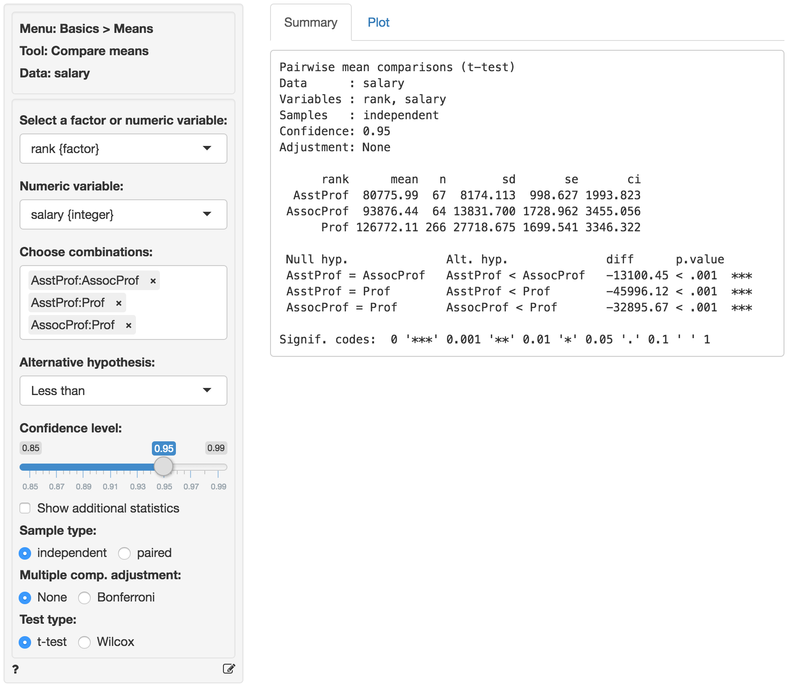
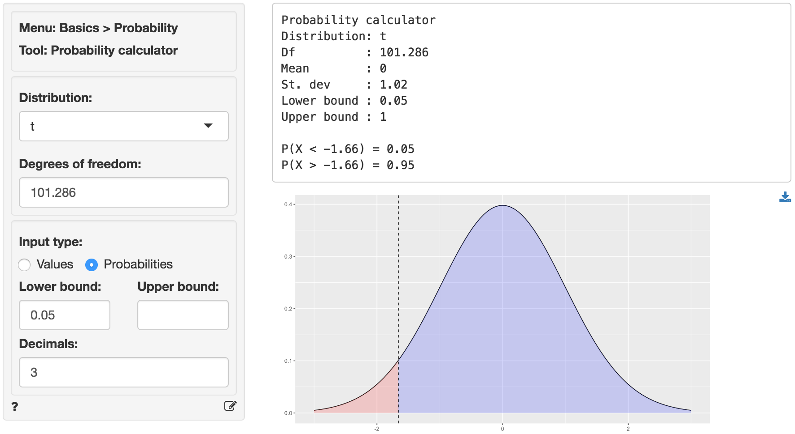
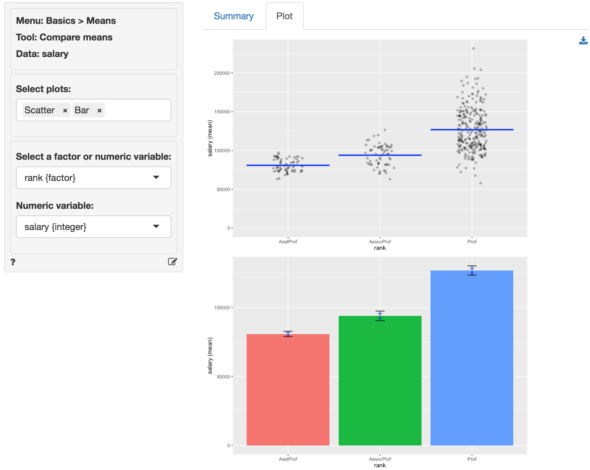

Basics > Means > Compare means
Compare the means of two or more variables or groups in the data
The compare means t-test is used to compare the mean of a variable in one group to the mean of the same variable in one, or more, other groups. The null hypothesis for the difference between the groups in the population is set to zero. We test this hypothesis using sample data.
We can perform either a one-tailed test (i.e., less than or greater than) or a two-tailed test (see the ‘Alternative hypothesis’ dropdown). We use one-tailed tests to evaluate if the available data provide evidence that the difference in sample means between groups is less than (or greater than ) zero.
Example: Professor salaries
We have access to the nine-month academic salary for Assistant Professors, Associate Professors and Professors in a college in the U.S (2008-09). The data were collected as part of an on-going effort by the college’s administration to monitor salary differences between male and female faculty members. The data has 397 observations and the following 6 variables.
- rank = a factor with levels AsstProf, AssocProf, and Prof
- discipline = a factor with levels A (“theoretical” departments) or B (“applied” departments)
- yrs.since.phd = years since PhD
- yrs.service = years of service
- sex = a factor with levels Female and Male
- salary = nine-month salary, in dollars
The data are part of the CAR package and are linked to the book: Fox J. and Weisberg, S. (2011) An R Companion to Applied Regression, Second Edition Sage.
Suppose we want to test if professors of lower rank earn lower salaries compared to those of higher rank. To test this hypothesis we first select professor rank and select salary as the numerical variable to compare across ranks. In the Choose combinations box select all available entries to conduct pair-wise comparisons across the three levels. Note that removing all entries will automatically select all combinations. We are interested in a one-sided hypothesis (i.e., less than).

The first two blocks of output show basic information about the test (e.g.,. selected variables and confidence levels) and summary statistics (e.g., mean, standard deviation, etc. per group). The final block of output shows the following:
Null hyp.is the null hypothesis andAlt. hyp.the alternative hypothesisdiffis the difference between the sample means for two groups (e.g., 80775.99 - 93876.44 = -13100.45). If the null hypothesis is true we expect this difference to be small (i.e., close to zero)p.valueis the probability of finding a value as extreme or more extreme thandiffif the null hypothesis is true
If we check Show additional statistics the following output is added:

seis the standard error (i.e., the standard deviation of the sampling distribution ofdiff)t.valueis the t statistic associated withdiffthat we can compare to a t-distribution (i.e.,diff/se)dfis the degrees of freedom associated with the statistical test. Note that the Welch approximation is used for the degrees of freedom0% 95%show the 95% confidence interval around the difference in sample means. These numbers provide a range within which the true population difference is likely to fall
Testing
There are three approaches we can use to evaluate the null hypothesis. We will choose a significance level of 0.05.1 Of course, each approach will lead to the same conclusion.
p.value
Because each of the p.values is smaller than the significance level we reject the null hypothesis for each evaluated pair of professor ranks. The data suggest that associate professors make more than assistant professors and professors make more than assistant and associate professors. Note also the ’***’ that are used as an indicator for significance.
confidence interval
Because zero is not contained in any of the confidence intervals we reject the null hypothesis for each evaluated combination of ranks. Because our alternative hypothesis is Less than the confidence interval is actually an upper bound for the difference in salaries in the population at a 95% confidence level (i.e., -9785.958, -42744.474, and -28889.256)
t.value
Because the calculated t.values (-6.561, -23.334, and -13.569) are smaller than the corresponding critical t.value we reject the null hypothesis for each evaluated combination of ranks. We can obtain the critical t.value by using the probability calculator in the Basics menu. Using the test for assistant versus associate professors as an example, we find that for a t-distribution with 101.286 degrees of freedom (see df) the critical t.value is 1.66. We choose 0.05 as the lower probability bound because the alternative hypothesis is Less than.

In addition to the numerical output provided in the Summary tab we can also investigate the association between rank and salary visually (see the Plot tab). The screen shot below shows a scatter plot of professor salaries and a bar chart with confidence interval (black) and standard error (blue) bars. Consistent with the results shown in the Summary tab there is clear separation between the salaries across ranks. We could also choose to plot the sample data as a box plot or as a set of density curves.

Multiple comparison adjustment
The more comparisons we evaluate the more likely we are to find a “significant” result just by chance even if the null hypothesis is true. If we conduct 100 tests and set our significance level at 0.05 (or 5%) we can expect to find 5 p.values smaller than or equal to 0.05 even if the are no associations in the population.
Bonferroni adjustment ensures the p.values are scaled appropriately given the number of tests conducted. This XKCD cartoon expresses the need for this type of adjustments very clearly.
Stats speak
This is a comparison of means test of the null hypothesis that the true population difference in means is equal to 0. Using a significance level of 0.05, we reject the null hypothesis for each pair of ranks evaluated, and conclude that the true population difference in means is less than 0.
The p.value for the test of differences in salaries between assistant and associate professors is < .001. This is the probability of observing a sample difference in means that is as or more extreme than the sample difference in means from the data if the null hypothesis is true. In this case, it is the probability of observing a sample difference in means that is less than (or equal to) -13100.45 if the true population difference in means is 0.
The 95% confidence bound is -9785.958. If repeated samples were taken and the 95% confidence bound computed for each one, the true population mean would be below the lower bound in 95% of the samples
1 The significance level, often denoted by \(\alpha\), is the highest probability you are willing to accept of rejecting the null hypothesis when it is actually true. A commonly used significance level is 0.05 (or 5%)